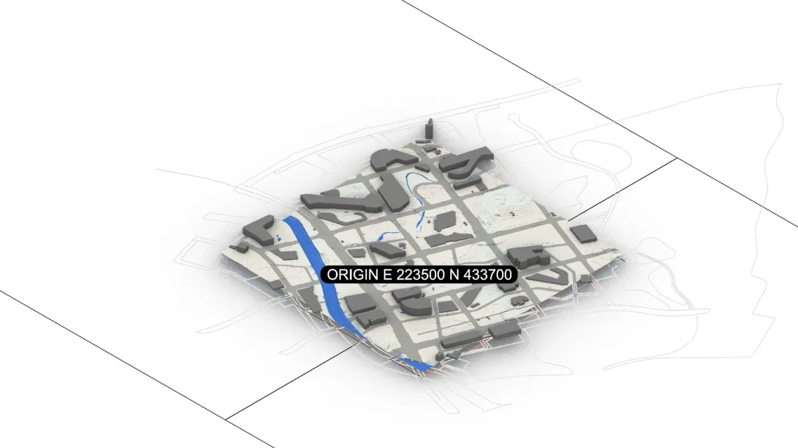
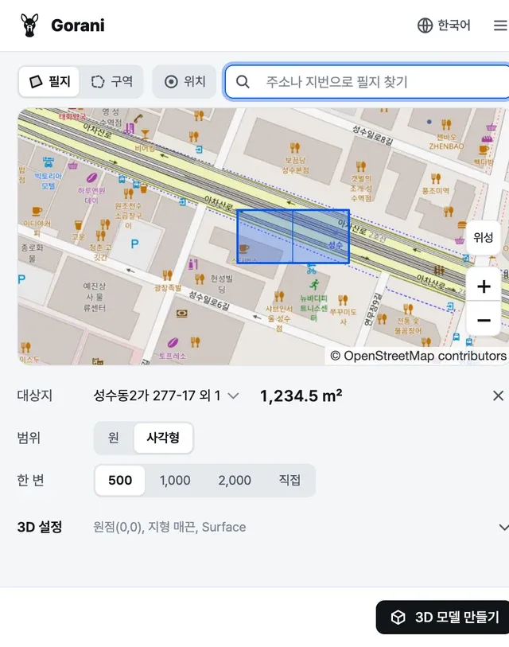
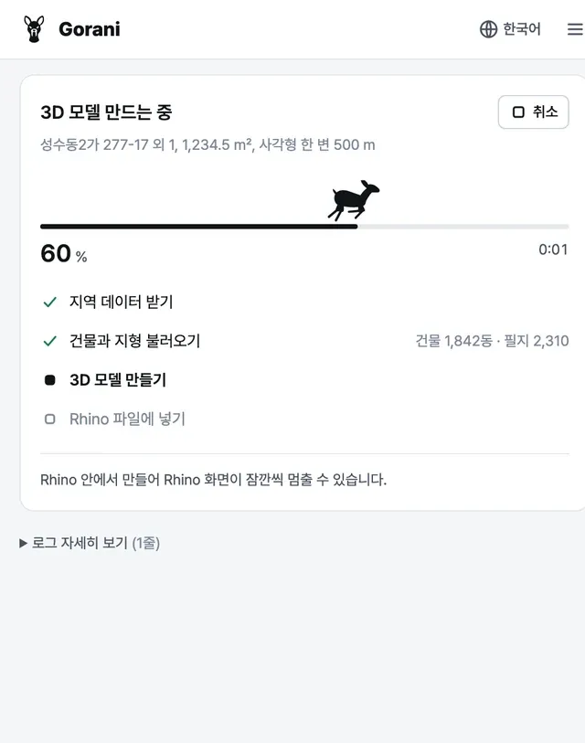
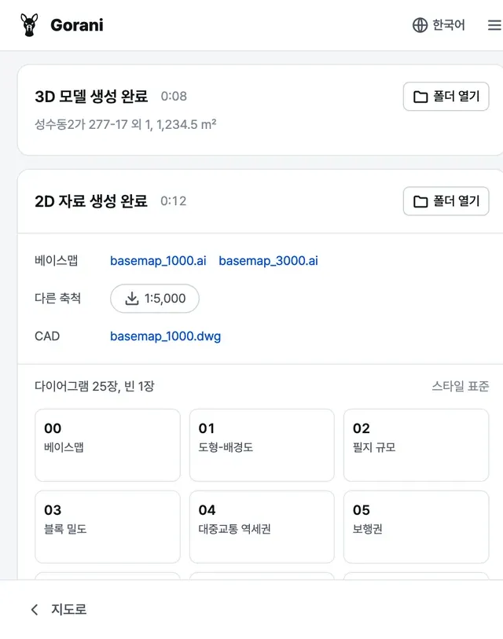
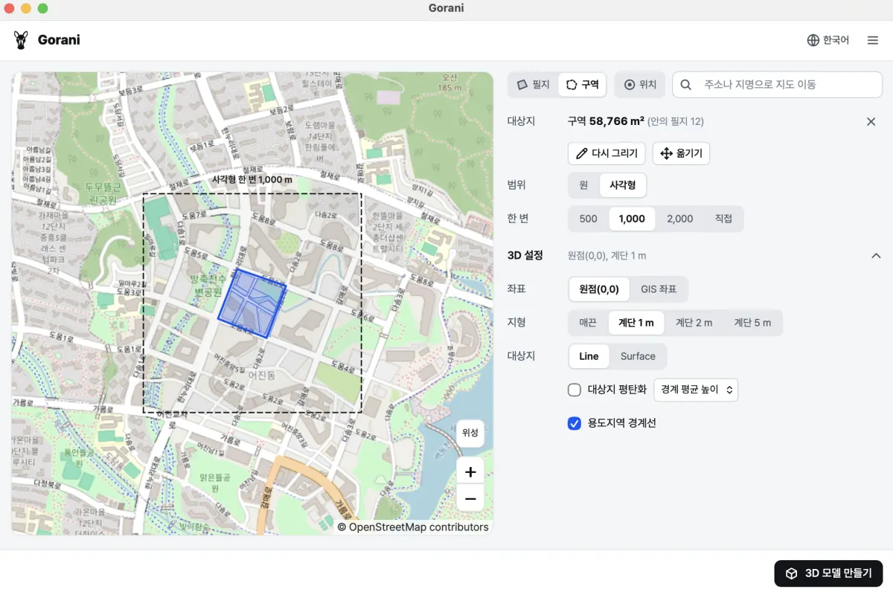
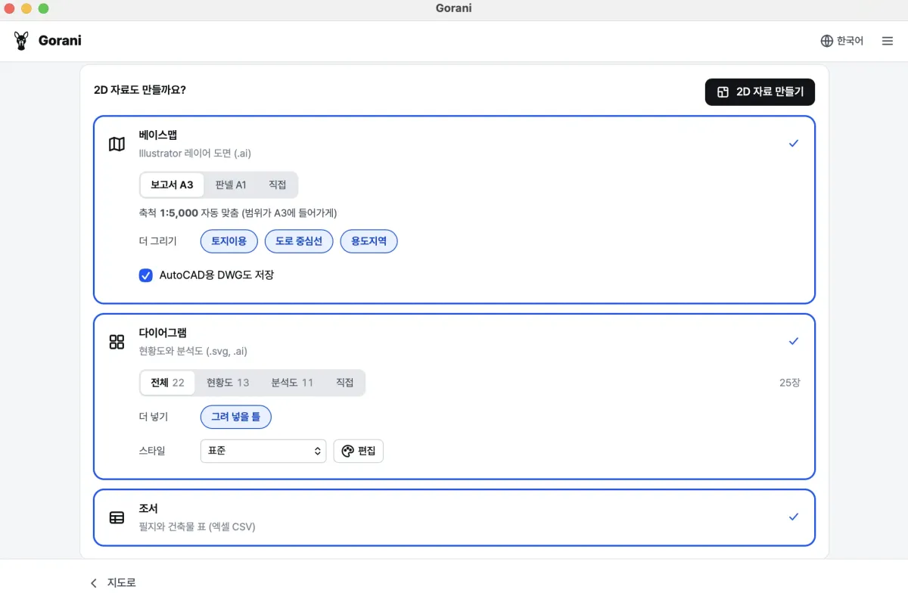
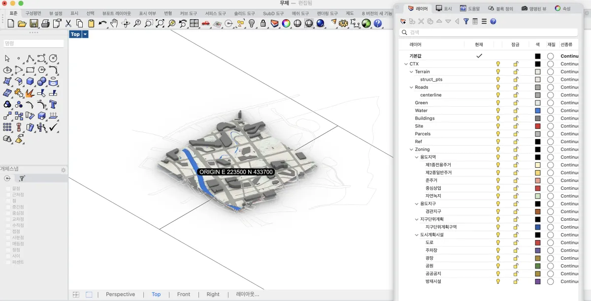

Gorani
대상지 3D 모델링·분석 무료 플러그인
Site context for urban design
대상지를 고르면 도면이 나온다.

3D 지형·건물·도로·수계 모델과 2D 현황도·분석도 22종을 한 번에 만든다. 공공데이터를 로컬 SQLite 팩으로 묶어 서버 없이 돈다.
베이스맵은 Illustrator 레이어와 DWG로, 조서는 CSV로 내보낸다. 출처와 기준일은 도면에 자동으로 적힌다. 사이트는 한국어, 영어, 일본어, 중국어, 스페인어로 운영한다.
Workflow



Interface


In Rhino
